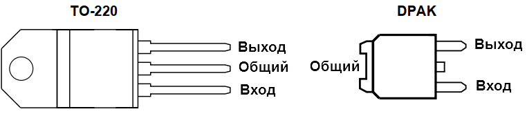

Cтабилизатор L78M09AC
L78M09AC - прецизионный стабилизатор положительного напряжения.

Блок-схема стабилизатора L78M09AC
| Параметр | Значение |
|---|---|
| Входное напряжение, В | 11,5 ... 24 |
| Выходное напряжение первого канала, В | 9 |
| Выходной ток первого канала, мА | 350 |
| Минимальное падение напряжения, В | 2 |
| Диапазон рабочих температур,°C | 0 ... 125 |
| Корпус | ТО-220, D-PAK |
Источники:
catalog.gaw.ru - L78M09AC Прецизионный стабилизатор положительного напряжения